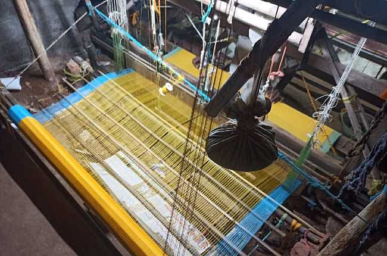
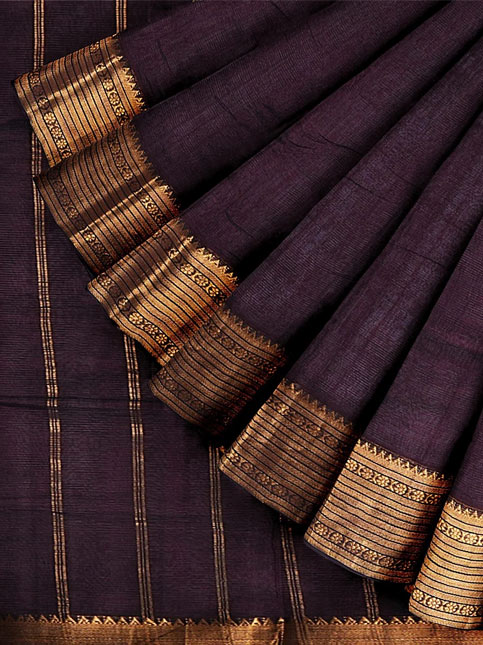
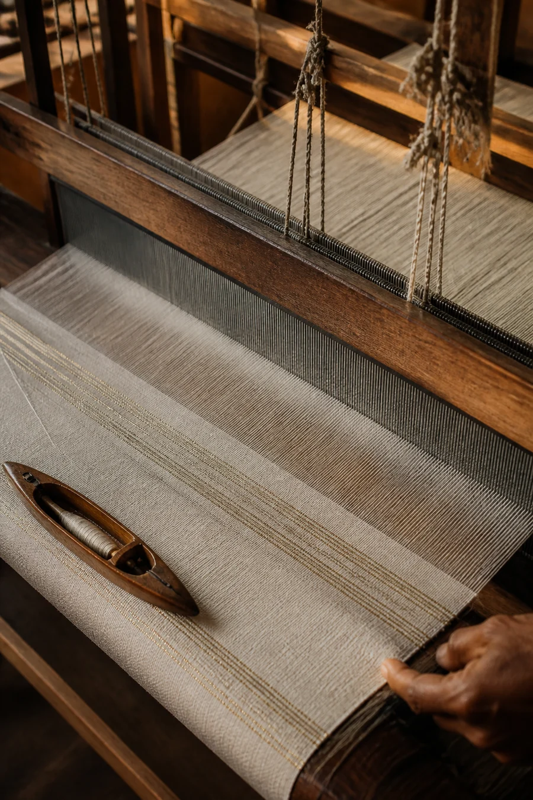
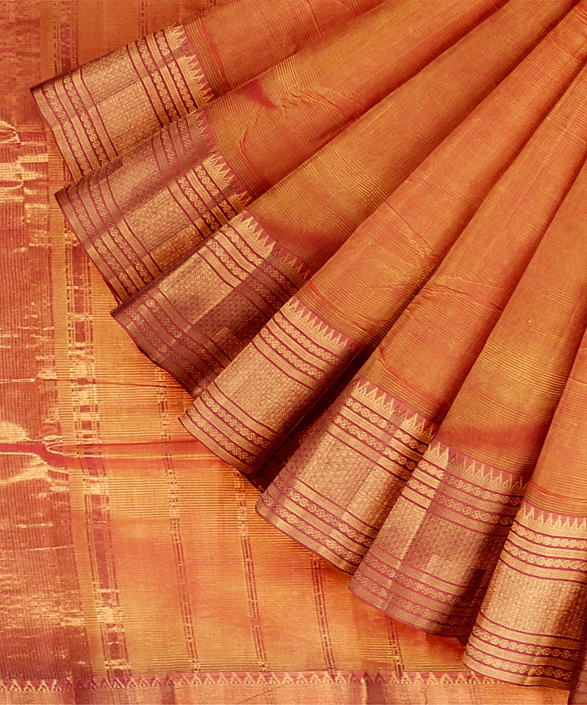

Cotton
Woven cotton forms the material foundation.
Loom, rhythm, geometry and repeated field learning.
Mangalagiri sits inside QVibe’s operating geography. Government of Andhra Pradesh handloom material recognises Mangalagiri Sarees and Fabrics as a distinctive handloom tradition, and the GI Registry records Mangalagiri Sarees and Fabrics as a registered Geographical Indication.
Its proximity makes repeated visits, observation and first-party documentation possible as QVibe develops its research approach.

Mangalagiri’s identity is carried through the weave itself — in its cloth, border language and the rhythm of handloom production.
Woven cotton forms the material foundation.
Lengthwise threads create order and tension.
The shuttle builds cloth across the warp.
Distinctive border and restrained zari language carry identity.
Handloom character remains visible in the structure.


The knowledge inside a handloom tradition is larger than one finished product. QVibe wants to explore how that weaving language may live in additional contemporary contexts without making the weave anonymous.

Mangalagiri is both a living weaving centre and an important location in Andhra Pradesh’s wider handloom ecosystem. The Andhra Pradesh Handlooms & Textiles administration itself operates from Mangalagiri.
This is geographic and institutional context — not a claim of partnership with QVibe.
Because Mangalagiri sits inside QVibe’s operating base, it offers the project something especially valuable: the ability to return. Real understanding is unlikely to come from one visit. It comes from repeated observation, conversations, documentation and learning.